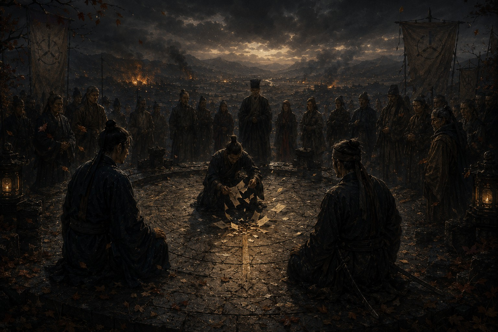

Дело о последнем собрании

Осенью дороги начинают звучать иначе. Летом они полны людей, повозок, торговцев, паломников и чиновников. Зимой их постепенно съедает снег. Но осенью появляется особый звук, который невозможно спутать ни с чем: звук отъезда, скрип колес, не собирающихся возвращаться, шаги людей, покидающих дом раньше времени, и торопливые разговоры на постоялых дворах о том, что где-то на юге снова поднял войско очередной губернатор.
К тому времени мы не виделись почти год. Сначала пришло письмо от Цзяня, потом от Ло, потом еще одно. Впервые за долгое время ни одно из них не содержало вопросов. Только место встречи. Северная площадка. Три слова, и больше ничего.
Я помню дорогу туда лучше многих расследований. Возможно, потому, что всю дорогу боялся опоздать. Не к назначенному часу, а к собственной жизни. Иногда человеку кажется, что если он не успеет сделать еще один шаг, то какая-то дверь закроется навсегда.
Когда меня привели к старому месту собраний, ветер уже срывал последние листья с деревьев. Ло был там. Я понял это раньше, чем он заговорил. Некоторые люди занимают пространство особым образом. Они входят в комнату, и воздух меняется. Ло никогда не был самым сильным человеком среди знакомых мне стражников, но рядом с ним всегда становилось спокойнее.
Он первым коснулся моего плеча, а потом вложил в ладонь небольшую деревянную пластину. Почерк был не его, а Цзяня. На пластине было вырезано: «Я здесь». Почему-то именно тогда мне стало легче. Через несколько минут подошел и сам Цзянь. Он сильно изменился. Разумеется, я этого не видел, но слышал, как изменились его шаги. Усталость тоже имеет звук, особенно когда человек много месяцев проводит среди пыли, архивов и чужих воспоминаний.
Мы не виделись почти год, и неожиданно оказалось, что говорить почти не о чем. Не потому, что тем не осталось, а потому, что каждый понимал: если начать рассказывать все сразу, времени не хватит. Поэтому сначала мы просто сидели, слушали ветер и молчали, как люди, которые слишком долго шли разными дорогами.
Лишь под вечер Цзянь вложил мне в руку первую пластину. На ней было вырезано: «Я нашел решение». Я перечитал ее дважды и спросил, какое именно. Ответ появился через несколько минут: «Не решение. То самое Решение». После этого стало тихо. Даже ветер словно отступил.
Ло что-то быстро написал на своей дощечке и передал Цзяню. Через мгновение новая пластина оказалась у меня в руках. На ней было вырезано: «Он говорит, что вокруг нас люди». Я спросил, сколько их. Ответ пришел не сразу. Больше двадцати. Мне сразу вспомнились дом господина Мина, исчезающие архивы, потерянные имена, человек без лица и все дороги, которые слишком долго вели нас к одному месту.
Потом раздался знакомый голос Незнакомца. Он сказал, что рад нашему приходу, и я услышал не одни шаги, а много. Люди выходили из леса медленно и без спешки. Никто не обнажал оружия. Никто не пытался окружить нас. Они просто занимали места вокруг площадки, словно собрание начиналось снова спустя несколько столетий.
Я спросил, кто они. Незнакомец ответил, что это те, кто остался от памяти. Это был очень плохой ответ, и он прекрасно это знал. Через некоторое время Цзянь вложил мне в руку новую пластину. На ней было вырезано: «Они старые». Я не сразу понял, и тогда он дал мне вторую: «Очень старые семьи». Вот тогда до меня дошло. Не люди. Роды. Хранители. Те самые, кто поколениями удалял документы, прятал записи, разбирал песни на части, стирал следы и называл это сохранением мира.
Я ожидал угроз, оправданий или лжи, но услышал другое. Незнакомец сказал, что мы были очень близко к правде, пока считали их злодеями. После этих слов я впервые за долгое время почувствовал настоящую злость. Я напомнил ему о стертых людях, уничтоженной памяти и лжи, тянувшейся через поколения. Он не отрицал ни одного слова. Потом только сказал, что теперь мне осталось задать последний вопрос. Я спросил: зачем?
И впервые за все годы нашего знакомства он ответил сразу: потому что иначе Империя погибла бы раньше.
После этого заговорили другие. Не одновременно, а по очереди: старые мужчины, старые женщины, люди, чьи семьи хранили тайну веками. Они рассказывали о голоде, войнах, городах, сожженных дотла, о временах, когда люди с полными Дарами существовали рядом с обычными, о катастрофе, после которой возникло Разделение. Они говорили, что предки не выбрали лучший путь. Они выбрали единственный путь, который тогда оставался. Я слушал долго и впервые в жизни не мог понять, где заканчивается правда и начинается оправдание.
Когда рассказы закончились, уже стемнело. Ветер усилился, где-то далеко ударил гром, и тогда Цзянь вложил мне в руку еще одну пластину, самую короткую за весь день. На ней было вырезано: «Они боятся». Я перечитал ее несколько раз и вдруг понял, что он прав. Все эти люди, хранители, потомки, свидетели чужих решений, не охраняли тайну. Они охраняли страх. Страх, что история повторится. Страх, что люди снова окажутся слишком целыми. Страх, что мир снова развалится.
Наверное, именно тогда впервые заговорил Ло. До этого он почти весь день молчал, писал, наблюдал и смотрел. Теперь он произнес всего несколько слов: «Мир уже разваливается». После этого никто не ответил, потому что возразить было нечего. Даже я слышал это в разговорах путников, в ценах на зерно, в письмах чиновников, в пустеющих дорогах и голосах людей. Империя трещала не завтра и не через сто лет. Сейчас.
И тогда случилось то, ради чего мы пришли на Северную площадку. Цзянь достал сверток. Я не мог видеть древнюю бумагу, но услышал ее сухой шелест и понял, что перед нами лежит тот самый документ, ради которого многие поколения лгали, стирали имена и убивали память. Люди вокруг перестали дышать. Потом бумага зашуршала снова, но уже иначе, и лишь через несколько мгновений я понял, что Цзянь рвет ее на части.
Кто-то вскрикнул. Кто-то шагнул вперед. Ло сразу перегородил дорогу, и по тому, как тяжело он поставил ноги, я понял: дальше не пройдет никто. А Цзянь продолжал спокойно, медленно и не останавливаясь. Он рвал последний документ, последнее свидетельство, последний архив, все то, ради чего жил, все то, что искал, все то, что по своему Дару должен был сохранить. Я никогда не слышал более страшного звука.
Когда все закончилось, никто не произнес ни слова. Лишь спустя несколько минут Цзянь вложил мне в руку пластину, наверное, последнюю важную пластину своей жизни. На ней было вырезано: «Документ можно уничтожить. Песню нельзя». Я долго держал ее в руках и впервые понял, какую цену он только что заплатил. Хранитель Памяти уничтожил память, чтобы она перестала быть вещью, которую можно изъять, запечатать или объявить опасной.
В ту ночь мы не нашли ответа, но нашли нечто другое. Мы поняли, что правда не принадлежит ни хранителям, ни следователям, ни архивам, ни Палате Ритуалов. Она принадлежит тем, кто сумеет пронести ее дальше. А когда мы покидали Северную площадку, ветер впервые за много лет принес знакомый мотив, песню о пташке. Мне показалось, что в ней появился еще один куплет, которого раньше не было. Но слов я пока разобрать не смог.